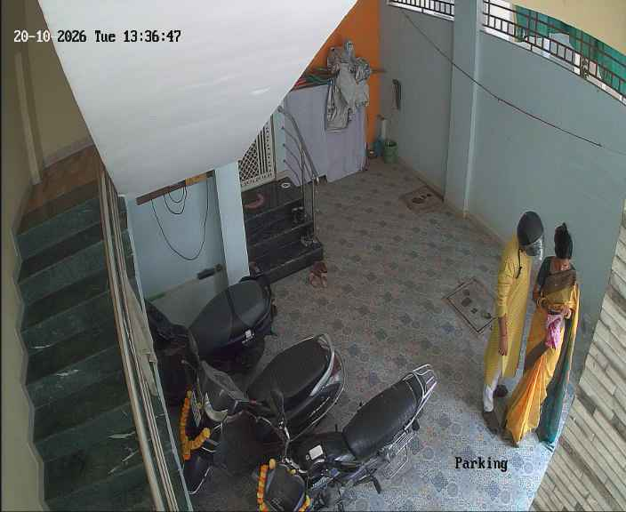
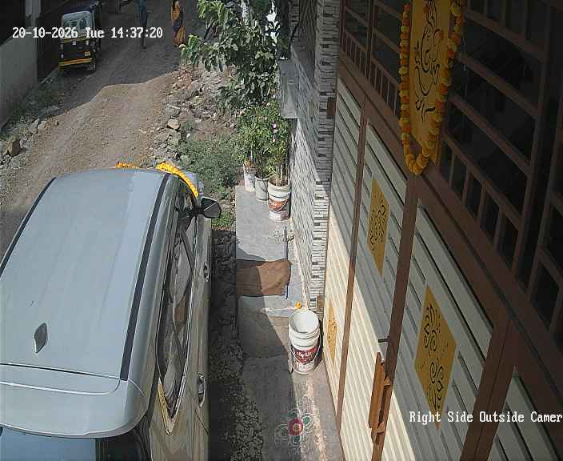
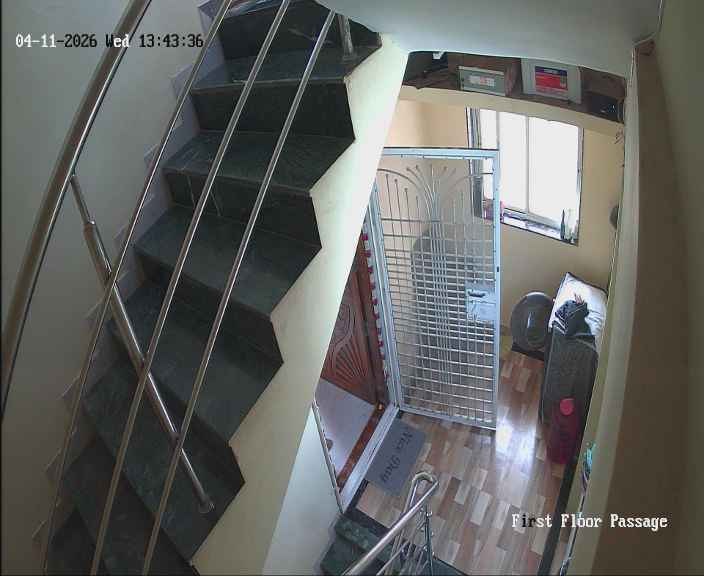
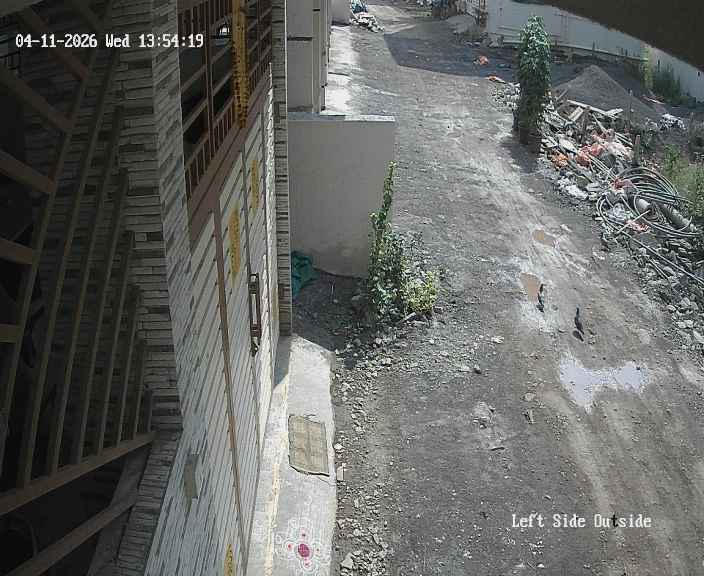

Live monitoring
Dashboard
Four-camera live view over the local gateway. H.264 sub streams only — the DVR is never exposed beyond this hub.
Cameras online
4 / 4
All nominal · 704×576 sub
Events today
297
+38 in last hour
Person / vehicle
273 · 24
DVR classification labels
Alerts sent today
3
301 suppressed by rules

Right Side Outside Camera

First Floor Passage

Left Side Outside
Today by camera
Parking78
Right Side Outside90
First Floor Passage24
Left Side Outside106